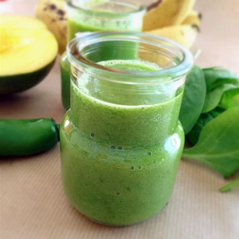

Jalapeno Green Smoothie

Description
A green veggie and fresh fruit smoothie with a kick! This drink will leave you feeling refreshed and energized!
Original recipe by Alli Shircliff on allrecipes.com
Ingredients
- 2 bananas, broken into chunks
- 2 cups baby spinach
- 1 cup frozen mango chunks
- 1/2 teaspoon chopped jalapeno pepper, or to taste
- 1 cup water, or as desired
Steps
- Layer all ingredients in blender
- Add water
- Blend until smooth
- (Optional) Add more water for a thinner smoothie